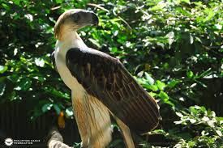

Águila filipina
 El águila filipina es endémica de Filipinas y se puede encontrar en cuatro islas principales: Luzón oriental, Samar , Leyte y Mindanao . La mayor cantidad de águilas reside en Mindanao, con entre 82 y 233 parejas reproductoras. Solo se encuentran seis parejas en Samar, dos en Leyte y unas pocas en Luzón.
Amenazas
La deforestación, La caza, Las trampas.